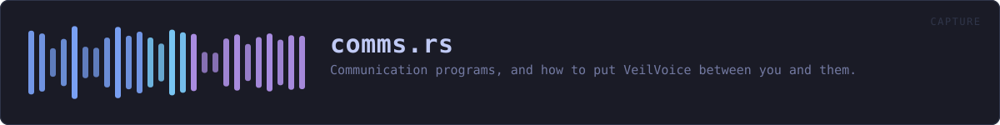

crates/veilvoice-capture/src/comms.rs
veilvoice-capture · 321 lines · read the source
Communication programs, and how to put VeilVoice between you and them.
What this does, and the one thing it deliberately does not
It finds the calling and messaging programs on this machine and tells you, for each one, exactly where to point it so your voice goes through VeilVoice before it goes to anybody else.
It does not reach inside any of them. It does not read Signal's or Matrix's traffic, hook their audio, inject into their processes or decrypt anything. That is not a limitation being apologised for — it is the same act this whole project exists to make useless, and a privacy tool that shipped a way to intercept an end-to-end encrypted call would be arguing against itself.
The route, and why it is a virtual cable
Every program here lets you choose which microphone it uses. So:
your microphone -> VeilVoice -> a virtual audio cable
|
v
Discord / Signal / anything,
with the cable chosen as its "microphone"Nothing has to know VeilVoice exists. The program asks the operating system for a microphone, the operating system hands it the cable, and the cable carries a voice that is not yours. That is why this works with programs nobody here has ever tested, including ones that do not exist yet.
Your voice, not theirs
This route veils what you send. It does nothing to what you receive: the other people on the call are not going through VeilVoice, and their voices arrive as they always did.
Veiling a whole call — everybody, including the people at the other end — means capturing what the program plays, which is a different mechanism on every platform and is not built. INCOMING says so in the words a front end should show, rather than letting somebody assume a recording of a call is veiled on both sides.
In plain words
If you want to talk to people through Discord, Signal, Telegram or anything like them without your real voice going out, this tells you how: send your microphone through VeilVoice, out to a virtual cable, and then tell the chat program that the cable is your microphone. It never knows the difference.
It only changes what you send. Everybody else on the call still sounds like themselves, and this does not record or read anything they send you.
WHAT THIS FILE CONTAINS
321 lines defining 4 functions (4 public), 1 type and 4 constants. Everything below is read out of the source, so it cannot disagree with the code.
The types it owns.
struct Commline 60 — One communication program, and where its microphone setting lives.
What happens when it runs. These are the ways in: public, and nothing else in this file calls them, so they are what an outside caller reaches first.
instructionsline 144 — What to do, for one program.runningline 186 — Which of these are running now, and anything that went wrong looking.by_keyline 200 — The program with this identifier.weightline 209 — How a running communication program should be described.
WHAT CALLS WHAT
The functions this file defines, and the calls between them. An edge means the callee's name appears, called, inside the caller's body — a syntactic reading, not a type-resolved one.
The same graph as Mermaid source
%%{init: {"theme":"base","themeVariables":{"background":"#1a1b26","primaryColor":"#1f2335","primaryTextColor":"#c0caf5","primaryBorderColor":"#7aa2f7","secondaryColor":"#16161e","tertiaryColor":"#16161e","lineColor":"#737aa2","textColor":"#c0caf5","mainBkg":"#1f2335","nodeBorder":"#7aa2f7","clusterBkg":"#16161e","clusterBorder":"#2f3549","fontFamily":"ui-monospace, SFMono-Regular, Consolas, monospace","fontSize":"14px"}}}%%
flowchart TD
n_instructions(["instructions<br/>line 144"])
n_running(["running<br/>line 186"])
n_by_key(["by_key<br/>line 200"])
n_weight(["weight<br/>line 209"])
click n_instructions href "https://github.com/tilas01/veilvoice/blob/main/crates/veilvoice-capture/src/comms.rs#L144" "open the source"
click n_running href "https://github.com/tilas01/veilvoice/blob/main/crates/veilvoice-capture/src/comms.rs#L186" "open the source"
click n_by_key href "https://github.com/tilas01/veilvoice/blob/main/crates/veilvoice-capture/src/comms.rs#L200" "open the source"
click n_weight href "https://github.com/tilas01/veilvoice/blob/main/crates/veilvoice-capture/src/comms.rs#L209" "open the source"
classDef entry fill:#1f2335,stroke:#7aa2f7,color:#c0caf5
class n_instructions,n_running,n_by_key,n_weight entryThis site loads no third-party script, so it cannot run Mermaid; the diagram above is the same nodes and edges drawn by the generator instead. GitHub renders the source below directly.
ITEMS
| Item | Line | Documentation |
|---|---|---|
Comm pub struct | 60 | One communication program, and where its microphone setting lives. |
COMMS pub const | 81 | The programs this build knows where to look in. |
instructions pub fn | 144 | What to do, for one program. |
ANY_PROGRAM pub const | 154 | The general route, for a program not in the table. |
INCOMING pub const | 162 | What this route does not cover, in the words a front end should show. |
NO_INTERCEPTION pub const | 170 | What this crate will not do, and why that is not an oversight. |
running pub fn | 186 | Which of these are running now, and anything that went wrong looking. |
by_key pub fn | 200 | The program with this identifier. |
weight pub fn | 209 | How a running communication program should be described. |